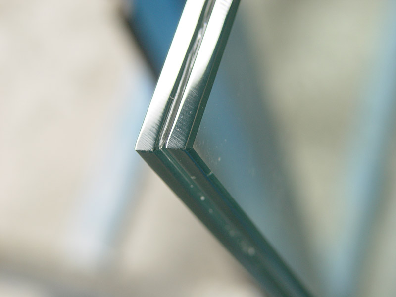
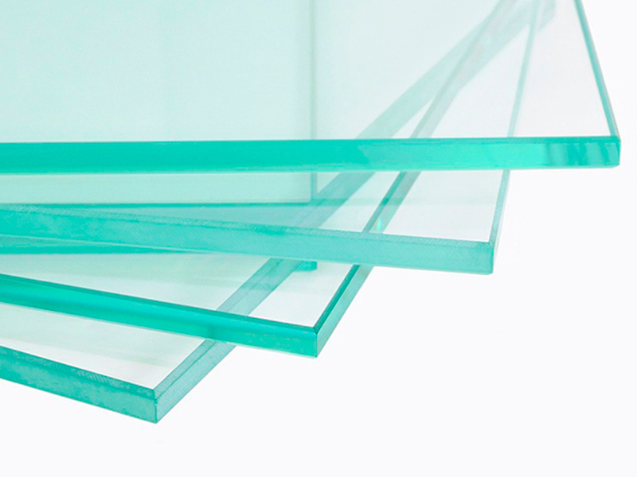
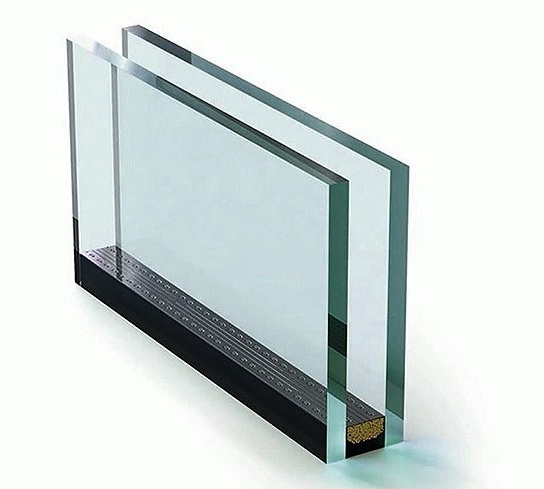

La Línea Módena es un sistema de carpintería que ha creado un estándar debido a su diseño y al equilibrio peso/resistencia. Gracias a sus accesorios garantizados y tratamientos superficiales de alta calidad es más resistente al paso del tiempo ya que carece de mantenimiento. Esta línea de perfiles fue concebida como la evolución en cuanto a tecnología, calidad, diseño y funcionalidad, diseñada en argentina e inspirada en formas y estéticas europeas.
Características
- - Esta línea le brinda al diseñador una gran variedad de combinaciones
- - Se puede utilizar vidrio simple o doble vidriado hermético (DVH)
- - Todas las aberturas son doble contacto
- - Tiene la opción de utilizar cámara condensadora de presionas para mayor resistencia
- - Excelente hermeticidad y estanqueidad en las aberturas
- - Es el sistema más tradicional entre los carpinteros argentinos
Tipologías disponibles
- - Ventana y puerta corrediza corte a 45°
- - Ventana y puerta corrediza corte a 90°
- - Ventana banderola
- - Ventana ventiluz
- - Ventana de abrir y oscilobatiente
- - Ventana desplazable
- - Ventana guillotina
- - Puerta de rebatir
- - Paño fijo
.jpg)
.jpg)
La Línea A40 es un sistema de carpintería de alta prestación con diseño de vanguardia y estética minimalista de líneas rectas. Se utilizan accesorios de alta calidad logrando un excelente diseño en su conjunto, y un óptimo funcionamiento y maniobrabilidad en su uso cotidiano.
Características
- - Excelente hermeticidad y resistencia para viviendas de alta gama
- - Línea compuesta por puertas y ventanas corredizas de 2, 3, y 4 hojas con cortes a 45 y 90
- - Amplia gama de tipologías de batientes
- - Permite la fabricación de aberturas de gran tamaño y peso con alta resistencia
- - Tiene una alta resistencia a las cargas de viento
Tipologías disponibles
- - Ventana y puerta corrediza corte a 45°
- - Ventana y puerta corrediza corte a 90°
- - Ventana banderola
- - Ventana ventiluz
- - Ventana de abrir y oscilobatiente
- - Ventana desplazable
- - Ventana guillotina
- - Puerta de rebatir
- - Paño fijo
Para ofrecer un servicio integral, fabricamos nuestros propios vidrios y DVH.
El Vidrio Laminado se fabrica uniendo dos planchas de vidrio Float a una inter lámina plástica de alta elasticidad. Es la solución ideal para cerramientos seguros.
Algunos de sus reconocibles atributos y utilidades son:
- - Filtra el 94% de radiación UV, evitando la decoloración prematura de los amoblamientos y cortinas de interior.
- - Si el cristal se quiebra, mantiene la integridad y visibilidad a través del cerramiento.
- - Evita graves lesiones con vidrio al romperse en forma segura, ya que el cristal se fragmenta y no explota.
- - Su gran resistencia tiende a contener a una persona u objeto en caso de impactos.
- - Excelente componente para hacer de sus ventanas un producto seguro.
- - Cuando ambos vidrios tienen el mismo espesor se denomina laminado simétrico, cuando son de distinto espesor laminado asimétrico.
Vidrio Laminado
Vidrio float
El Vidrio Float o Cristal Plano, es insustituible cuando se desea obtener una visión clara sin distorsión óptica y constituye la materia prima por excelencia para ser transformado en vidrio templado, laminado y fabricar espejos.
Sus caracteristicas y ganancias son:
- - Es un cristal plano transparente, libre de distorsión.
- - Cuando se fabrica Float de color, se incorporan a la mezcla óxidos metálicos que son los que tiñen la masa del vidrio.
- - Para reducir el ingreso de calor solar radiante y disminuir las molestias causadas por una excesiva luminosidad, se produce coloreado en su masa y/o con un revestimiento reflectivo aplicado sobre una de sus caras.
El DVH está compuesto por dos o más vidrios, separados entre sí por una cámara de aire totalmente sellada.
Algunas de sus más importantes cualidades y beneficios son:
- - Aumenta en más del 100% el aislamiento térmico del vidriado.
- - Mejora el aislamiento acústico entre un 40% a un 70%.
- - Disminuye el consumo de energía de climatización por las pérdidas a través del vidrio.
- - Elimina la condensación de humedad sobre el vidrio evitando que se empañe.
- - Impide el paso de polvo, suciedad, humedad y vapor de agua.
- - Anula el efecto de “muro frío” aumentando el confort junto a la ventana.
- - Puede aplicarse en grandes superficies vidriadas.
- - Anula el efecto de “muro frío” aumentando el confort junto a la ventana.
Doble Vidrio Hermético
Vidrio templado

El vidrio Templado es un cristal muy resistente a los impactos físicos y térmicos gracias a un proceso térmico al cual se lo somete.
Algunas de sus considerables propiedades son:
- - Presenta una resistencia cuatro veces mayor que un vidrio plano común.
- - En caso de rotura, se desintegra en pequeños fragmentos que no causan heridas cortantes lo que implica seguridad para los usuarios.
- - Es el tipo de vidrio indicado para aquellas situaciones donde el vidrio está tomado por herrajes o arañas.
- - Se fabrica a partir de una hoja de vidrio común ya cortada a medida